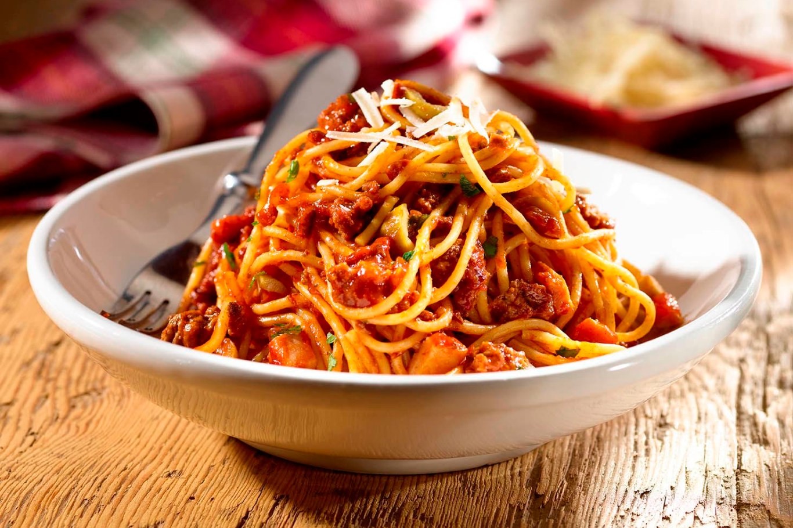

Tallarines con tuco
Ingredientes
- 500 gramos de harina
- 4 huevos
- 1 cucharadita de sal
- 3 cucharadas de aceite de oliva
Para el tuco:
- 1 zanahoria
- Salsa de tomate
- Sal
- Aceite
- 1 morrón rojo
- Condimentos a gusto
- Pimienta
- 1 tomate
- 1/2 kilo de carne picada
- 1 cebolla grande
- Queso rallado a gusto (opcional)
Pasos
- Colocar en un bol la harina, realizar una corona en el centro y agregar los huevos, sal y aceite de oliva. Si es necesario, agregar 1 cucharada de agua.
- Amasar por 5 minutos hasta formar una masa para tallarines caseros lisa y homogénea, y dejar descansar tapada.
- Estirar la masa de los fideos con tuco hasta conseguir el espesor deseado.
- Cortar la masa en la forma elegida, en este caso, yo corté tallarines finos.
- Cocinar los fideos caseros en abundante agua hirviendo con sal de 2 a 3 minutos, ya que es una pasta fresca.
- Preparar la salsa o tuco mientras los fideos se cuecen: para ello, picamos y freímos la cebolla, agregamos la carne, el tomate picado chico, la zanahoria rallada, el morrón picado, y condimentamos con las hierbas a gusto, sal y pimienta.
- Agregar queso rallado a gusto a los tallarines caseros con tuco y servir para el almuerzo.